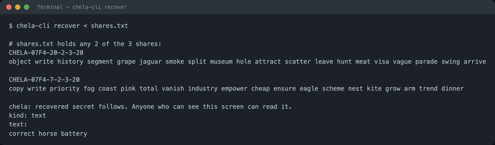

Recovery on the command line
chela-cli recover rebuilds the secret from any M shares of
a set. It reads share text from standard input, so you can pipe in a file or paste
the shares directly. To create shares in the first place, see
splitting on the command line.
The recovered secret is printed in the clear. Anyone who can see the screen - or your terminal scrollback, swap, or a screen recorder - can read it. Recover only when you are about to use the secret, ideally on an offline machine. The threat model spells out what this does and does not protect.
Recover from share words
Collect any M shares - the header lines and their words - into one
file, or paste them in and end with Ctrl-D. chela verifies each share's
checksum, confirms the shares belong to the same set, and rebuilds the secret. Fewer
than the threshold is refused; shares from two different splits are refused.
chela-cli recover < shares.txt
Recover from saved paper backups
If you saved the --paper HTML files when you split, point
recover straight at them. Each file carries a machine-readable copy of
its share, so chela reads the words back without you re-typing them.
chela-cli recover backup-dir/share-*.html
The same works for a folder of --json shares. You only need
M of the files present; the rest can stay wherever their holders keep
them.
Next steps
Recovery also works in the terminal wizard and the website, reading the same shares. To see exactly what the words encode and how recovery rebuilds the secret, read the share format.